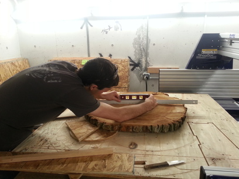

Shop Bot
Last year a large oak tree where I live had to be cut down. Afterwards there were cross-sectional slices of the trunk being given away so I kept one to make into a table surface. This week I finally got around to that project.
The goal was to level both sides of the tree slice and cut a ring depression into the bottom side to fit onto a metal stand. I was sharing a shop bot with twenty people and I ran out of time to finish the table - in fact, I didn't get much cutting done. However, I got the hardest part done, the first cuts. Here's a picture of the progress.
The tree slice I was starting with had been cut by a chainsaw. Each side had taken multiple cuts, and these cuts left different-height planes. In one place, the curve of the chainsaw's end appeared in the wood. Both sides were rough with a fur-like texture. I wanted to turn these into flat smooth surfaces.
When I first brought the tree slice home it had knocked against another object and part of the bark broke off. There are two layers to the bark, a dark outer layer of fractal bumps and a light inner layer of constant width much wider than a tree ring. Both of these layers had broken off in one place and the broken inner layer was a strong visual defect, so I really didn't want to break more. Another defect in the wood was a radial crack that had shown up a few weeks later. Across the following year the wood dried out but otherwise stayed the same. Now I was finally going to work with it.
The challenge I faced was a standard one: I needed to fix an irregular object at a precise angle securely enough to mill it. I didn't want to damage the piece with screws or glue, so it had to be clamped to the shop bot table. Both sides of the slice were uneven, so I needed to arrange supports underneath that would prop it at the right angle for the cut. Since the slice was already only an inch and a half thick in some places, I couldn't afford to remove much material; I had to find an orientation that maximized the distance between the highest and lowest fully-contained horizontal planes.
A rigid 3D object is positionally constrained by three points, so I needed to lock three points of my tree slice to cut it. Actually, my piece wasn't rigid due to the radial crack: ten pounds of force would bend the slice a few millimeters around that crack. I needed four locked points, then, one on each side of the crack plus two others. Fortunately the wood was the same height on either side of the crack, so a flat support under the crack would lock both sides. Along with propping up the crack I'd need to prop up one other point, and the last locked point would rest directly on the table. I chose to cut the nicer side of the piece first in case there wasn't enough thickness to cut a fully level surface on both sides. With the nice side up, I found combinations of scrap wood that stably propped the piece in a horizontal orientation. Using a level, I adjusted the supports until the surface was maximally aligned to the horizontal.
At this point I had to stop for the day. I traced the outlines of the piece and of each support onto the shop bot table and drew a few other lines to help me realign everything later. I stored my things.
The next day I came back and put everything back in place. It only took a few minutes. I rechecked the surface levelness and screwed the supports into the shop bot table. Now the piece was level, but it needed to be clamped down.
On the shop manager's suggestion, I used a pair of quarter-inch bolts to clamp a 2x4 over the top of my piece. I drilled bolt holes into a pair of scrap 2x4 blocks and sunk wells partway down for nuts to rest in. I slotted a bolt with a nut into each hole then screwed the blocks into the shop bot bed. On a longer 2x4 I marked the locations of the exposed bolts and drilled holes at these locations. I slotted the 2x4 over the pair of bolts, added washers and nuts, and tightened the beam down. Initially I tightened one side too much and popped a screw in the underlying block, so I had to start again; the block split when I chose a bad place for a screw, but there was enough left to screw down securely. Now I had a clamp on my piece - I'd placed it right over the pair of supports.
I had thought I'd need a second clamp, but I found I could shove my full body weight into the piece without it budging, so one clamp was plenty. Finally the piece was ready to cut - it had taken five hours to get here.
Half of the surface was exposed for a cut. Using the level again, I marked the highest points on the exposed surface. In general the middle of the tree slice was above the edges, but the chainsaw defect in one edge was a couple tenths of an inch higher than the middle. I decided to do a small cut to lower that edge to match the rest of the surface, then a big cut to level the whole exposed region.
Our shop bot computer uses VCarvePro to create tool paths. I specified a rectangular pocket to cut out and configured the tool bit I was using and the program generated a tool path. It didn't give me much control over the path, however - I couldn't choose where the bit plunged. I was using a 1-1/4" bit that would take off 0.08" of material height each pass, and the bit had to enter from the side, so it was important to plunge the bit outside of my piece. In the end I had to tell VCarve to just cut an extra large rectangle so that whichever corners it chose to plunge at would fall outside of my piece. I exported the tool path and checked that the points looked right.
I zeroed the shop bot's x, y, and z coordinates. Usually the z-coordinate can be zeroed automatically with a metal plate of known thickness - you place the plate over the highest point of your piece and the shop bot head plunges until the bit touches the plate. Contact completes a circuit so the machine can tell exactly when it's touched the plate. The bit I was using seems to have been nonconducting, however, because this wasn't working, so I zeroed it manually.
I set the z-coordinate zero an inch high and sent the job to the machine. I watched as it executed an air cut and could confirm that it was plunging outside the piece. Satisfied that it would do the job correctly, I returned the z-coordinate zero to the true zero and sent the job.
The shop bot leveled the high edge exactly as desired, so I repeated the process for the full exposed region. I zeroed z to the new highest point and ran an air cut to test my tool path. This time I left the dust vacuum off the shop bot because it would have run into the clamp during cutting. Everything ready, I sent the shop bot the job. It cut beautifully.
The cut took less than ten minutes once everything was set up. The bit removed so little height on each pass that the bark easily stayed intact. I vacuumed up the dust, removed my pieces, and vacuumed up more dust. If I'd had more time on the shop bot I'd have clamped down the cut surface, removed the old clamp, and immediately cut the other half of my piece, but others had been waiting on the machine. Instead I'll have to recalibrate the supports when I return, but that won't add much time. After the first side is flattened, cutting the other side and giving it a circular slot for the metal stand will be easy. I'll do a final pass on the top side to make the full surface even before I sand it for a smooth finish. I'm excited!
Well, that was the original plan. But the first cuts had exposed a nail piece in the tree, and the lab shopbot isn't set up for cutting metal. We wouldn't have cut the piece if we'd known it had metal in it, but fortunately the cuts hadn't damaged the drill bit or harmed anything else. I had intended to cut the remaining parts of the table on the assumption that running into a nail was rare, and when we searched the wood with a magnet we found no other nails (even though we could feel the first nail through quarter-inch plywood). However, in talking with the shop monitors we concluded it was too high a risk. A low chance of damaging the bit is acceptable, but cutting the nail could dangerously fire bits of metal at people nearby.
If I can track down a drum sander I'll return to this work and hopefully produce a finished table. But for now, the project is, well, tabled.